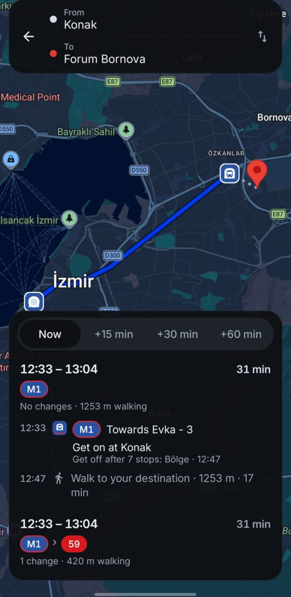
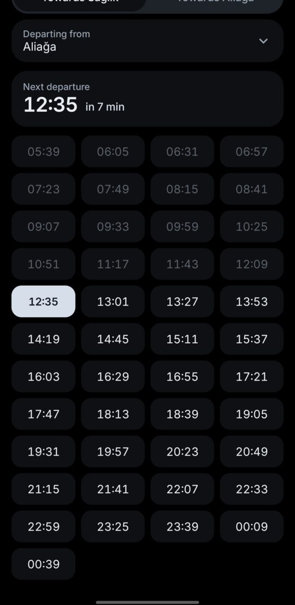
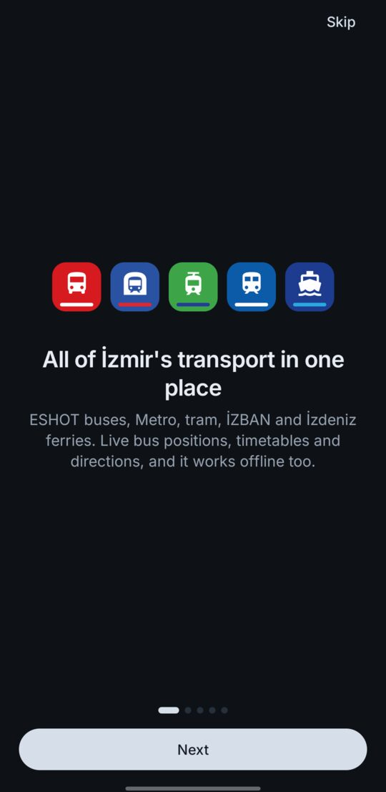

İzmir'in tüm ulaşımı, tek uygulamada. All of İzmir's transport, in one app.
Canlı ESHOT otobüsleri, Metro, tramvay, İZBAN ve vapur. Sefer saatleri, aktarmalar ve yol tarifi — hızlı, sade ve internet olmadan da çalışır. Live ESHOT buses, Metro, tram, İZBAN and ferries. Timetables, interchanges and directions — fast, calm, and it works offline too.
- OtobüsBus
- Metro
- TramvayTram
- İZBAN
- VapurFerry
Ücretsiz ve açık kaynak (GPL v3). Hesap, reklam ya da takip yok. Free and open source (GPL v3). No accounts, no ads, no tracking.
Neler yapabilirsinWhat it does
Resmî açık verilerle yapıldı; hat, durak ve sefer saatleri telefonunda durur, sadece canlı konumlar internet ister. Built on official open data; lines, stops and timetables live on your phone, and only live positions need the internet.
Canlı otobüslerLive buses
446 ESHOT hattında otobüsler haritada akıcı ilerler; yaklaşan otobüslerin kaç durak ve kaç dakika uzakta olduğunu gör.Buses on all 446 ESHOT lines glide on the map; see how many stops and minutes away the next ones are.
Yol tarifiTrip planner
Adresi ya da yeri yaz: hangi durağa yürüyeceğini, neye bineceğini ve nerede aktarma yapacağını gösterir. Hesaplama tamamen telefonda.Type an address or place: it shows which stop to walk to, what to take and where to change. Planned entirely on your phone.
Her durak, her istasyonEvery stop and station
Yakınlaştır, tüm duraklar görünsün; birine dokun, hatlarını ve aktarmalarını gör. Hilal ve Halkapınar gibi aktarma noktaları işaretli.Zoom in to see every stop; tap one for its lines and connections. Interchanges like Hilal and Halkapınar are marked.
Sefer saatleriTimetables
Her hat için; metro, tramvay, İZBAN ve vapurda istediğin istasyondan. Sıradaki sefer vurgulu.For every line; for rail and ferries from any station. The next departure is highlighted.
Favoriler ve uyarılarFavourites and alerts
Durak ve hatlarını kaydet, ana ekranda yaklaşan otobüsleri gör; otobüsün birkaç durak kalınca haber ver.Save stops and lines, see their next buses on Home, and get an alert when your bus is a few stops away.
Sana göreYours
Türkçe ve İngilizce; açık, koyu ve AMOLED tema; sakin ya da sıvı cam görünüm; tam ekran harita.Turkish and English; light, dark and AMOLED themes; a calm or liquid-glass look; a fullscreen map.
Ekran görüntüleriScreenshots



Veriler nereden geliyorWhere the data comes from
| ESHOT hat, durak, güzergâh ve saatlerESHOT lines, stops, routes, times | İzmir Büyükşehir Belediyesi açık veri portalı ve ESHOT GTFSİzmir Metropolitan Municipality open data portal and ESHOT GTFS |
| Canlı otobüs konumlarıLive bus positions | İzmir Teknoloji (İztek) açık web servisleriİzmir Teknoloji (İztek) open web services |
| Metro, tramvaytram | İşletmelerin GTFS yayınlarıThe operators' GTFS feeds |
| İZBAN | izban.com.tr sefer saatleriThe izban.com.tr timetable |
| VapurFerries | İzdeniz açık APIİzdeniz open API |
| HaritaMap | Google Maps |